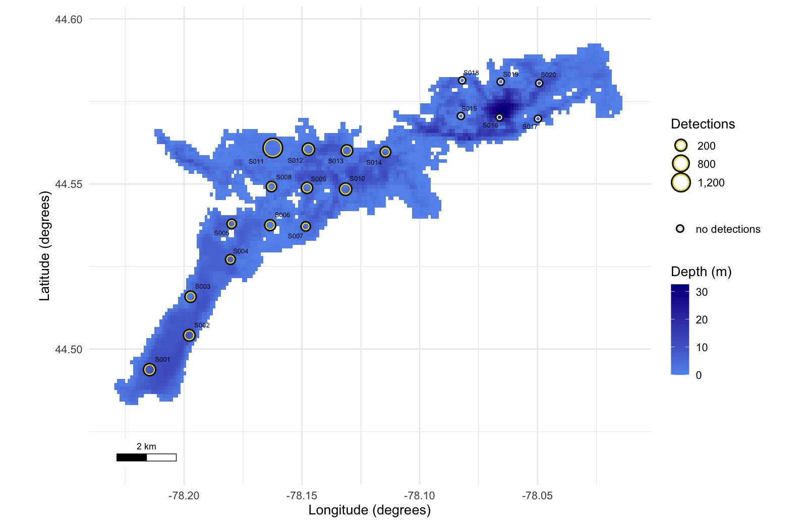
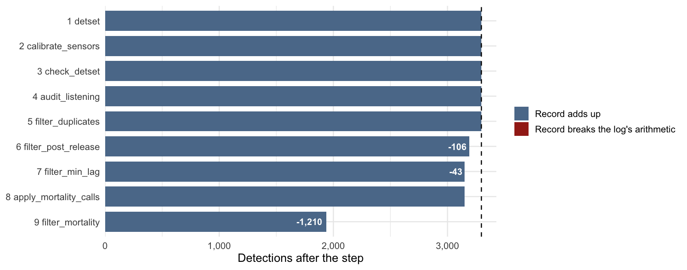
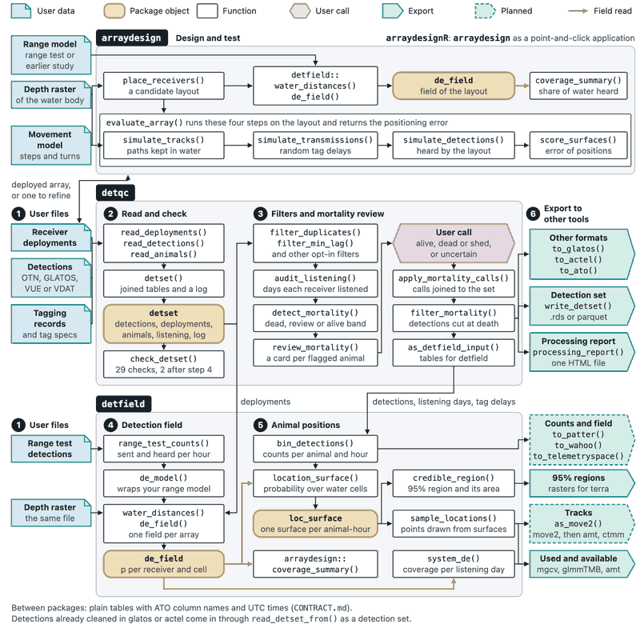

detqc reads detection files from OTN, GLATOS and InnovaSea, and tagging and receiver deployment files from OTN and GLATOS, runs a range of data checks and filters, reviews mortality, and generates a processing report. It writes the result for the detfield R package, the glatos and actel R packages, or the ATO tables.
Install
install.packages("remotes")
remotes::install_github("jakebrownscombe/detqc", build_vignettes = TRUE,
dependencies = TRUE)To install the whole suite at once, see the positionR landing page.
Example
The example files are a synthetic study of four walleye tracked by 20 receivers in Stoney Lake, Ontario, from 2 to 10 June 2024.
library(detqc)
in_file <- function(name) system.file("extdata", name, package = "detqc")
# Read the detections, the receivers and the tagging records
detections <- read_detections(in_file("stoney_detections.csv"))
deployments <- read_deployments(in_file("stoney_receivers.csv"),
format = "glatos")
animals <- read_animals(in_file("stoney_detections.csv"), format = "glatos")
# Join them into one detection set
dets <- detset(detections, deployments, animals)
# Map the stations over the depth of the lake
lake <- terra::rast(in_file("stoney_depth.tif"))
plot_receivers(dets, water = lake) + theme_positionr(base_size = 13)
The 20 receiver stations of the example, sized by the detections each heard of the four walleye; six heard none.
plot_attrition() draws what each step removed from stoney_clean, the same study filtered.
# Draw the detections left after each step of the filtered study
plot_attrition(stoney_clean) + theme_positionr(base_size = 13)
Detections left after each logged step, from 3,297 read (dashed line) to 1,938 kept. The mortality cut removed 1,210, all of them ST-02’s.
Articles
- Get started with detqc runs the example once, from the files to the processing report.
- Base processing: read, check, and filter telemetry data reads your files and runs every check and filter.
- Mortality filtering: base algorithm and review cards flags potential mortalities and brings your calls back from the review cards.
- Export the dataset and generate a summary report writes the set for other tools and writes the processing report.
The suite
detqc is one of the four positionR packages, which share one set of column names and one example study, Stoney Lake.

- positionR, the suite
- detqc: read, check and filter detections.
- detfield: detection fields and positions.
- arraydesign: design and test the performance of tracking systems.
- arraydesignR: arraydesign as a point-and-click application.
detfield exports the same five figure functions as detqc. The copies are identical, so the masking message R prints when both are attached can be ignored.
Cite
Brownscombe JW (2026). positionR: tools for acoustic telemetry studies. R package version 2.0.0, https://jakebrownscombe.github.io/positionR/.
Brownscombe JW (2026). detqc: Quality Control and Mortality Review for Telemetry Detections. R package version 0.1.1. https://jakebrownscombe.github.io/detqc/